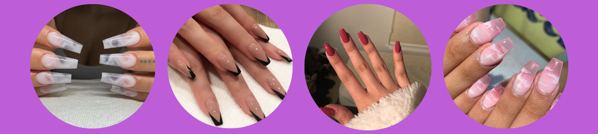

Acrylic nails

This faux nail method is ideal for those of us who want long nails, but can't or maintain their ideal nail length or shape on their own. However, they're not exactly effortless: getting acrylic nails comes with a price tag, and the upkeep does, too. Additionally, acrylics can damage your nails if they're done wrong.
What does it consist of?
Acrylic nails are made out of a liquid powder and are being sculpted directly onto your nails. Most of the time this mixture will cover the entire nail and not just the nail bed. Now the thing with this liquid powder is that – the longer it is exposed to the air, the more it hardens. That is the reason why you always end up with hard, stiff, and long lasting nails.
How are they applied?
When you're getting a full set of acrylics, the nail technician will usually put on tips, or use nail forms to achieve a more natural look. Each acrylic is then shaped as desired and then painted with polish.
It's safe to get acrylics as often as you wish, but research nail technicians in your area so that you're sure you go to someone who is properly trained and experienced in applying them.
Refill
Your natural nails will start to grow, and sooner or later, you will notice that your nails will require a refill.
Rush to the salon every 3 weeks to get them as fresh as possible.
How do you remove them?
It’s the best if you don’t try this at home because people often injure themselves easily when removing them on their own.
Removing acrylic nails isn't all that different from taking off a gel manicure. Acrylics should be removed by soaking each nail in acetone until the acrylic is soft enough to remove gently. It is best to have a professional remove them to avoid damage to your nail bed.
Pros
Refills of Acrylic Nails is cheaper than any other nails and the refill is durable for around 6 months so you don’t have to get new set of acrylic nails more often.
Acrylic nails grow quickly.
Acrylic Nails usually last very long, approximately for 2 long months.
It doesn’t easily crack if it can properly be applied.
Very strong and robuste.
Fills can go up to a month so you don't have to get refills as often as gel nails.
Acrylic extensions are suitable for people with brittle and weak nails.
Acrylics are good for women, who have a bad habit of chewing their nails as they are very hard to chew off.
Acrylic nails have been around longer than their counterparts, so, most nail technicians at salons and spas have a lot of experience about how to apply and remove these nails. You don’t have to worry about side effects as such.
Cons
Acrylic nails can be a little expensive based on the location you live in.
Drying the nails sometimes becomes boring as it takes 30-40 minutes to dry. But letting them dry is important.
Some salons are not well ventilated which results in the horrible smell of different nail polishes.
Acrylic nails are less safe than solar nails. The chemicals are not health-friendly. You may damage your nails if you use them for a long period of time.
They may look less natural than gel nails, especially if applied incorrectly.
If removed incorrectly, they can take layers of your natural nail away.
It can be hard to grow out your nails with acrylic over them.
Also, if damaged, the nail becomes a breeding ground for fungus and bacteria.